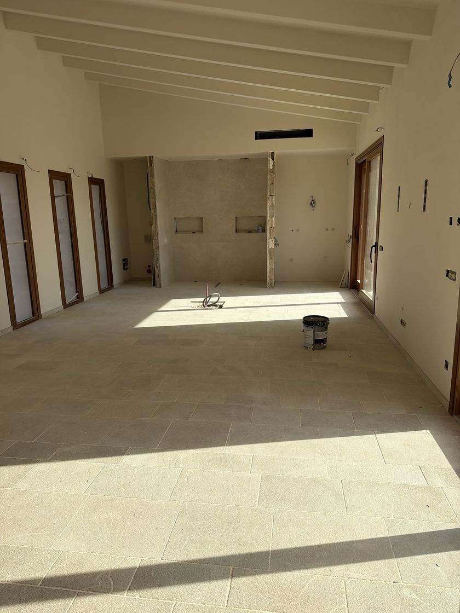
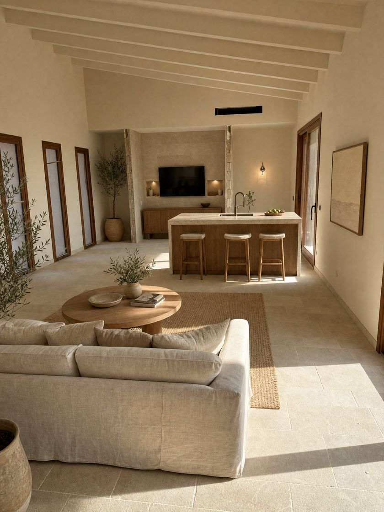
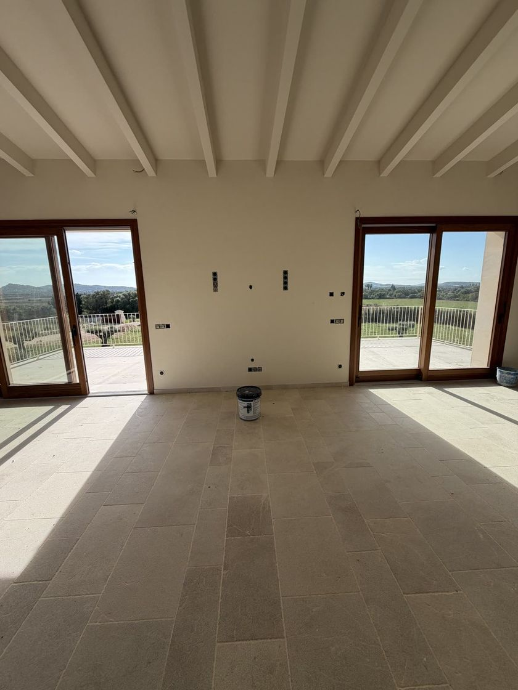
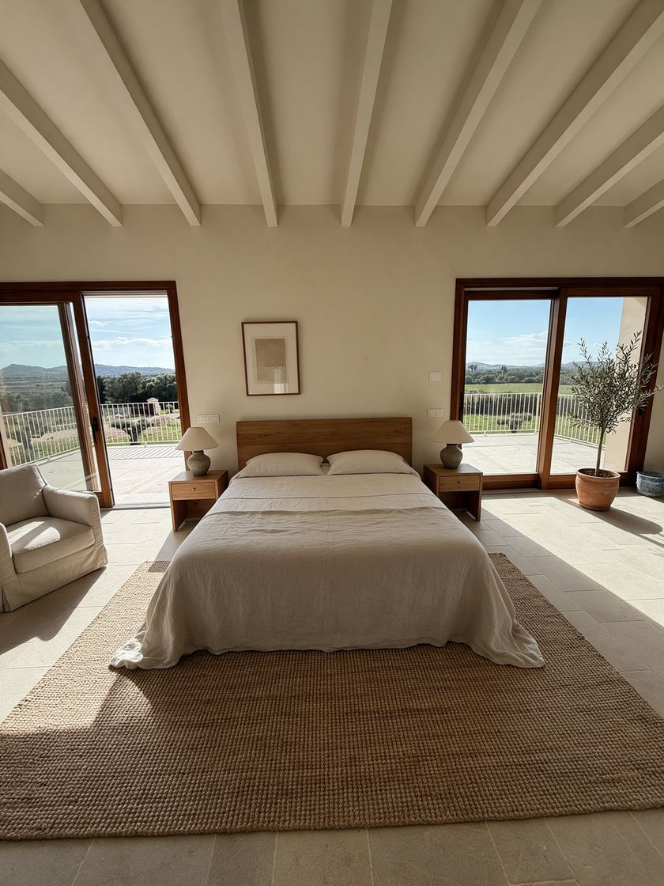
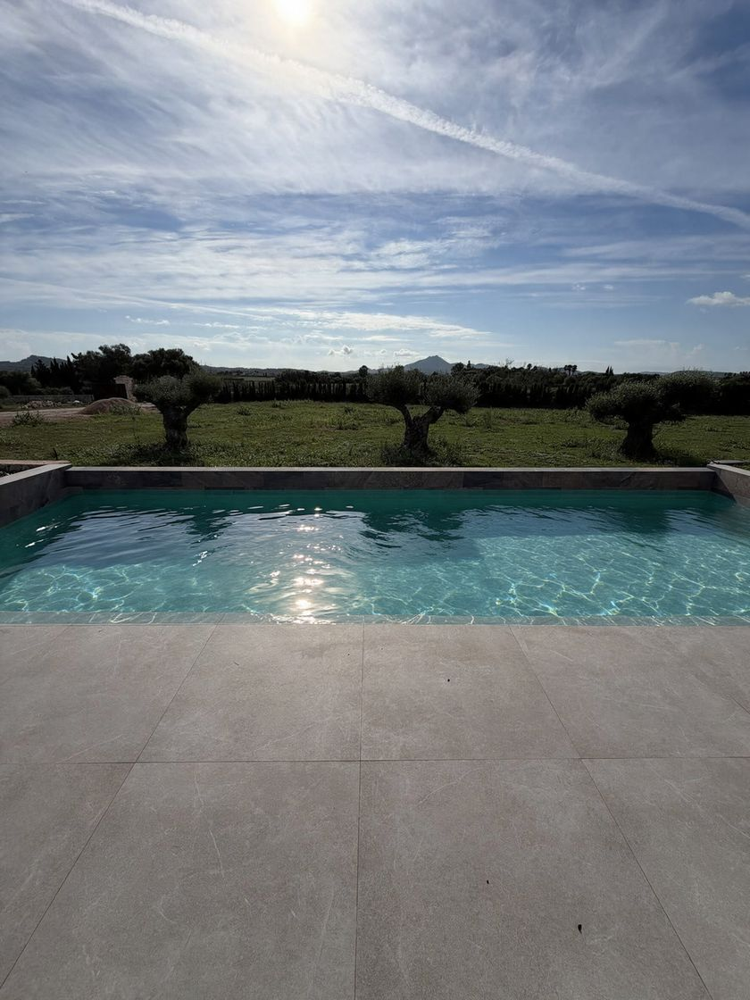

Ihre Bauten. Fertig gezeigt, bevor sie fertig sind.
Alle Beispiele auf dieser Seite stammen aus einer echten Finca auf Mallorca, mitten im Ausbau. Echte Fotos sind als „echtes Foto“ markiert, alles Erzeugte als „KI-Visualisierung“.
Vom Rohbau zum fertigen Raum in acht Sekunden.
Aus einem echten Baustellenfoto und der fertigen Visualisierung entsteht ein Zeitraffer: Schutt verschwindet, Küche und Möbel kommen. Gemacht für Instagram, WhatsApp-Status und die Objekt-Website.
Gleiches Haus. Gleiche Perspektive. Einmal echt, einmal fertig gedacht.
Ziehen Sie den Regler nach links und rechts. Links das unbearbeitete Handyfoto, rechts die Visualisierung von ONYX Studio.

 Echtes FotoKI-Visualisierung
Echtes FotoKI-VisualisierungWohnbereich mit KücheWerkzeug raus, Sofa und Kücheninsel rein.


Echtes FotoKI-VisualisierungOffener Raum mit KochinselWo heute Anschlüsse aus der Wand kommen, steht die Insel.


Echtes FotoKI-VisualisierungSchlafzimmer mit BlickBalken, Schiebetüren und Ausblick sind echt.

 Echtes FotoKI-Visualisierung
Echtes FotoKI-VisualisierungTerrasse & FassadeDas Haus bleibt, wie es ist. Ergänzt wird nur, was fehlt.


Echtes FotoKI-VisualisierungPoolMit Wasser zeigt das Becken den Sommer.
Ein Rundflug von der Einfahrt bis ins Schlafzimmer.
Erzeugt aus normalen Handyfotos: kein Drohnenpilot, kein Flugtag, kein fertiges Haus nötig. 60 Sekunden durchs Tor, an der Fassade vorbei, durch Wohnraum und Küche bis ins Schlafzimmer und hinaus zum Pool.
Beim Scrollen fliegt Ihr Käufer durchs Haus.
Eine eigene Seite nur für dieses Objekt: oben der Flug, darunter die echten Fotos, Vorher/Nachher und die Eckdaten. Dieses Beispiel ist auf Spanisch, auf Wunsch auch auf Deutsch oder Englisch. Am besten auf dem Handy öffnen.
Beispiel-Website öffnen → Infoblatt als PDFONYX Studio – alles für Ihr Büro in einem Konto.
Videos und Website sind das, was Ihre Käufer sehen. Dahinter steckt eine Software, die Ihnen die Arbeit rund um jedes Objekt abnimmt – auf Deutsch und Spanisch, am Handy wie am Rechner.
Für alleEinsprechen statt abtippen
- Objekt einsprechen: Durchs Haus gehen, Räume und Größen sagen – daraus entstehen Objektdaten und Grundriss-Skizze.
- Exposé, Scroll-Website oder komplette Website direkt aus dem Objekt beauftragen und fertig abholen.
- Startseite mit Tagesliste: Was heute wartet – Termine, neue Anfragen, Fristen.
- Zweisprachig: Oberfläche und Objekttexte auf Deutsch und Spanisch.
Für MaklerVom Auftrag bis zur Provision
- Unterlagen-Ampel: Sieht sofort, ob Nota simple, Energieausweis & Co. vollständig und aktuell sind.
- Interessenten einordnen: Heiß, warm oder kalt nach Budget, Finanzierung und Zeitraum – Prüffragen per WhatsApp oder Mail mit einem Tipp.
- Besichtigungen mit Rückmeldung und ein Eigentümer-Bericht zum Verschicken.
- Verkauf & Fristen: Reserva, Arras, Notar und Provision mit Datum – keine Frist rutscht durch.
Für BauträgerBaustelle und Verkauf im Griff
- Verkaufsstand je Einheit: frei, reserviert, verkauft – auf einen Blick für Bank, Architekt und Vertrieb.
- Material & Lager: Verbrauch buchen, die Software sagt, wann bestellt werden muss – mit Lieferzeit für die Fähre. Bestellung direkt per WhatsApp an den Lieferanten.
- Mängel- und Abnahmeprotokoll: Raum antippen, Foto, einsprechen – zum Ausdrucken mit Unterschrift.
Sehen Sie es an Ihrem eigenen Objekt.
15–20 Minuten per Videocall, unverbindlich. Schreiben Sie Marvin per WhatsApp zwei Terminvorschläge, und wenn Sie mögen, zwei, drei Handyfotos von einem aktuellen Rohbau.
Jetzt per WhatsApp schreiben